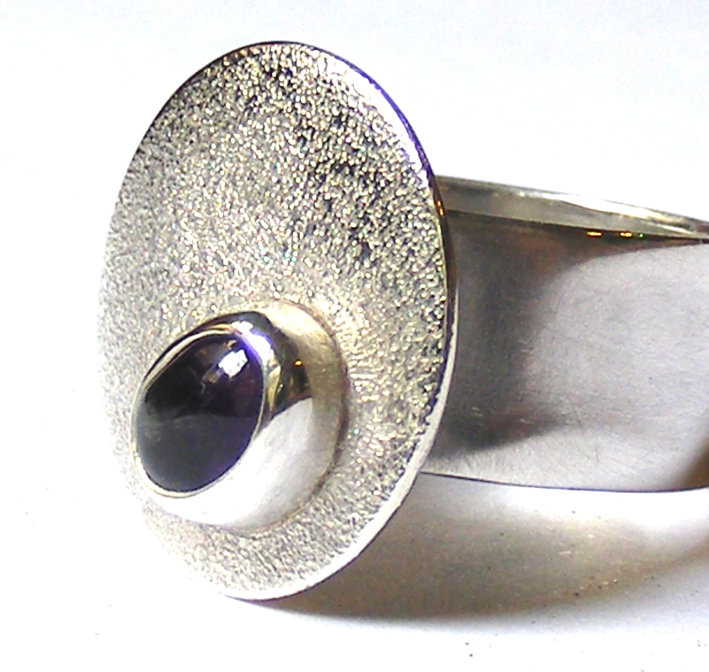
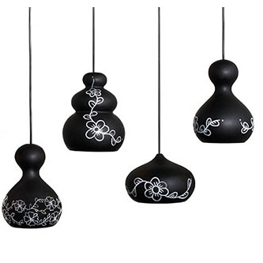

Artisan Connect
Manos chilenas, historias únicas
Plataforma Web · UX/UI Design · React Development
Una plataforma que equilibra tradición artesanal con modernidad digital, priorizando transparencia, comercio justo y la narrativa única detrás de cada pieza hecha a mano.
Los artesanos chilenos carecían de una plataforma que les permitiera mostrar no solo sus productos, sino también las historias y procesos detrás de cada pieza.


